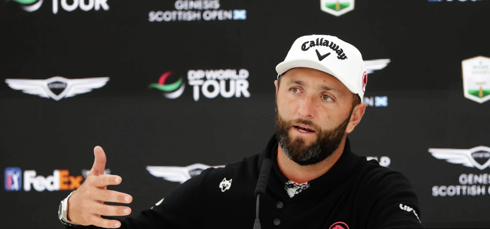

Quick Summary: Jon Rahm issued a careful non-answer at his Scottish Open press conference when asked about a personal Jon Rahm LIV Golf investment, highlighting the looming LIV Golf funding crisis 2027. Defecting on a record $300 million contract, Rahm’s hesitation to back the league with his own capital contrasts sharply with Bryson DeChambeau’s aggressive campaign to secure its survival.

The Careful Non-Answer in North Berwick
Sitting in the media center at the Genesis Scottish Open—his first non-major co-sanctioned start against PGA Tour players since defecting to LIV Golf—Jon Rahm faced the exact financial question his employers would prefer remained unasked. The Spaniard was asked directly if he would be willing to invest his own personal wealth back into LIV Golf to help keep the organization afloat. As the league's most expensive signing, a confident, immediate affirmative was the expected corporate response. Instead, Rahm offered a tentative shrug.
"Something I've learned in life, never say never," Rahm stated. "I'm not going to say absolutely no to anything that can happen in the future." He then immediately defused any sense of impending commitment by pointing out that LIV Golf's executive leadership, led by CEO Scott O'Neil, has not approached him regarding personal capital. "They have not asked me to do that yet. So I don't know if they will or not." For a league actively trying to project structural and financial permanence to skeptical commercial sponsors and outside investors, a non-committal "maybe" from the face of the brand is a telling crack in the armor.
At Golf Raw, our core editorial philosophy is built on stripping away the corporate PR messaging to examine the raw, underlying facts of the sport. We do not deal in spin. Looking objectively at Rahm's comments, this was not the endorsement of a true believer. It was the diplomatic sidestepping of an independent contractor who has already cashed his paycheck and has no desire to play the role of venture capitalist for a highly speculative sporting venture.
The Looming LIV Golf Funding Crisis of 2027
To understand why Rahm's non-committal answer carries such weight, one must look at the financial crossroads facing the breakaway league. Saudi Arabia's Public Investment Fund (PIF), which has bankrolled LIV Golf with more than $5 billion since its inception in 2022, confirmed in April that it will cease its unilateral funding model at the end of the 2026 season. The gravy train is officially hitting its terminus. Chief executive Scott O'Neil is currently passing the hat, looking to raise approximately $300 million from outside developers and private equity to keep a scaled-back, 10-event schedule breathing in 2027.
The financial foundation is already shifting from gifts to debt. According to reporting from the Financial Times, the PIF has only transferred around $200 million of its projected $600 million operational budget for this season, with a significant portion of that capital arriving as loans rather than equity. When a business is this heavily leveraged and actively hunting for external survival funds, the strongest marketing tool is player confidence. If the marquee talent who signed a deal worth north of $300 million refuses to pledge a single dollar of his own earnings back into the franchise, external investors have every reason to remain on the sidelines.
Bryson DeChambeau's Rescue Campaign vs. Rahm's Distance
The internal tension within LIV Golf is best highlighted by the contrasting approaches of its two biggest stars: Jon Rahm and Bryson DeChambeau. While Rahm maintains a strict, business-like distance, DeChambeau has thrown himself entirely into the league's survival campaign. The Crushers GC captain has been highly vocal, stating he is "giving all he can" to the franchise, lobbying sponsors behind the scenes, and aggressively pitching the team format at every opportunity. DeChambeau is playing for the survival of the entity; Rahm is playing golf.
Rahm’s reluctance to engage with the business side is well-documented. Weeks earlier at LIV Andalucia, he was much more direct about his boundaries: "It would be more of a stay-in-your-lane type situation as it goes to me. I know nothing about business. My job is to play golf, and it's hard enough as it is." His shift to "never say never" in Scotland is not a sign of warming to the idea of investment; rather, it is the adoption of a generic diplomatic phrase to make a persistent line of financial questioning disappear. This divergence reveals a fractured front, indicating that LIV’s wealthiest figures are not pulling in the same direction.
The Raw Read: A Telling Shrug in the Media Room
Ultimately, Rahm's honesty is refreshing. He is a golfer, not a financial strategist, and he refuses to manufacture artificial corporate belief to help his employer raise capital. However, in the high-stakes theater of sports finance, a careful "never say never" from your primary asset functions as a distinct warning sign. If LIV Golf's long-term survival eventually depends on the wallets of its own players, the gap between DeChambeau's flag-waving advocacy and Rahm's calculated distance will be the critical dynamic to watch.
For now, Rahm is playing it safe in both directions. He is keeping the door open just enough to avoid looking like a detractor, but keeping his hands firmly in his pockets. In a league where cash has always been the ultimate answer to every question, the fact that the biggest check-writer has closed the account tells us everything we need to know.